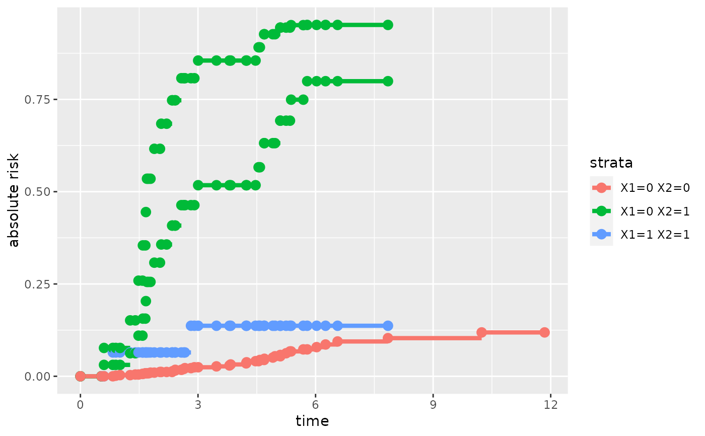

Plot Predictions From a Cause-specific Cox Proportional Hazard Regression
Source:R/autoplot.predictCSC.R
autoplot.predictCSC.RdPlot predictions from a Cause-specific Cox proportional hazard regression.
Usage
# S3 method for predictCSC
autoplot(
object,
ci = object$se,
band = object$band,
plot = TRUE,
smooth = FALSE,
digits = 2,
alpha = NA,
group.by = "row",
reduce.data = FALSE,
...
)Arguments
- object
Object obtained with the function
predictCox.- ci
[logical] If
TRUEdisplay the confidence intervals for the predictions.- band
[logical] If
TRUEdisplay the confidence bands for the predictions.- plot
[logical] Should the graphic be plotted.
- smooth
[logical] Should a smooth version of the risk function be plotted instead of a simple function?
- digits
[integer] Number of decimal places.
- alpha
[numeric, 0-1] Transparency of the confidence bands. Argument passed to
ggplot2::geom_ribbon.- group.by
[character] The grouping factor used to color the prediction curves. Can be
"row","strata", or"covariates".- reduce.data
[logical] If
TRUEonly the covariates that does take indentical values for all observations are displayed.- ...
Additional parameters to cutomize the display.
See also
predict.CauseSpecificCox to compute risks based on a CSC model.
Examples
library(survival)
library(rms)
library(ggplot2)
library(prodlim)
#### simulate data ####
set.seed(10)
d <- sampleData(1e2, outcome = "competing.risks")
seqTau <- c(0,unique(sort(d[d$event==1,time])), max(d$time))
#### CSC model ####
m.CSC <- CSC(Hist(time,event)~ X1 + X2 + X6, data = d)
pred.CSC <- predict(m.CSC, newdata = d[1:2,], time = seqTau, cause = 1, band = TRUE)
#> Error in sliceScale_cpp(newiid, M = -estimate * log(estimate)): could not find function "sliceScale_cpp"
autoplot(pred.CSC, alpha = 0.2)
#> Error in autoplot(pred.CSC, alpha = 0.2): object 'pred.CSC' not found
#### stratified CSC model ####
m.SCSC <- CSC(Hist(time,event)~ strata(X1) + strata(X2) + X6,
data = d)
pred.SCSC <- predict(m.SCSC, time = seqTau, newdata = d[1:4,],
cause = 1, keep.newdata = TRUE, keep.strata = TRUE)
autoplot(pred.SCSC, group.by = "strata")
